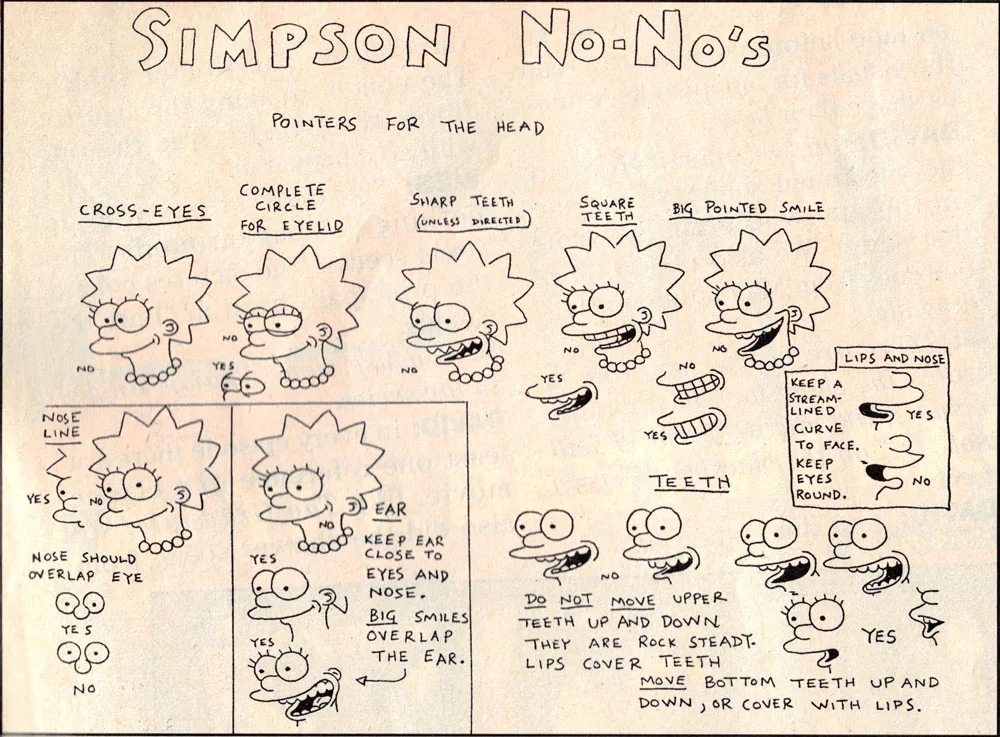

The Simpsons needs no introduction. Renewed through its 40th season, it is the longest-running scripted series in the history of American primetime television. If Bart Simpson aged in real time with the show, he would now be in his 40s.
As a lifelong fan of the show, I present here a few perfectly cromulent analyses about Springfield. All code used for this post is available on GitHub.

Ratings for The Simpsons have declined over time
You Only Move Twice (aired ) and Homer's Enemy, both from Season 8, share the highest IMDb score: 9.3. Ratings decline steadily after Season 10, but the decline has largely tapered off. The lowest-scoring episode to date came in Season 23 with Lisa Goes Gaga (3.9).
Nearly 800 episodes
This matrix graph visualizes each episode as an individual cell, shaded according to IMDb score. This creates a heatmap, allowing you to see trends more quickly.
Here we look at the difference between episodes within each season. Early seasons have a tighter grouping of episodes, meaning they all score roughly the same. Starting in Season 6, we begin to see a greater spread of episodes. Season 23 has the widest spread within a season: 4.4 points, from Lisa Goes Gaga (3.9) to Holidays of Future Passed (8.3).
Random quote
To alcohol! The cause of... and solution to... all of life's problems.
Quotes powered by The Simpsons Quote API. A great project!
Quotes are provided by the wonderful Simpsons Quote API. It returns a random Simpsons quote, the character's name, a link to their picture, and the direction the character is facing. I've used that last tidbit to make sure the character is always facing their quote.
Episodes by IMDb rating
Here we see the law of averages applied to a thirty-year legacy, demonstrating how the show's unparalleled longevity has diluted its critical average. The overwhelming concentration of episodes in the 6.5 to 7.5 rating range visually defines the modern era of The Simpsons: a massive volume of "serviceable" television that keeps the series afloat but rarely challenges the heights of its past.
Conversely, the elite tier of 8.5+ ratings appears as a scarce, thinning tail on the far right, emphasizing just how exceptional the "Golden Age" truly was. The drop-off from the solid middle ground to these masterpieces confirms that the perfection of episodes like "Homer's Enemy" or "Cape Feare" is a statistical anomaly in a sea of consistent, but safe, entertainment.
Top-rated episodes
These episodes represent the peak creative and comedic output of The Simpsons, predominantly spanning Seasons 4 through 8. This period is characterized by the show's mastery of satire, character development, and narrative ambition. Episodes like "Cape Feare," "Marge vs. the Monorail," and "Last Exit to Springfield" showcase the writers' ability to execute tight, cohesive plots that are both hysterically funny and structurally sound, cementing their legacy as foundational television comedy.
The listed episodes also mark a distinct evolution toward meta-narrative and dark comedy, particularly with the inclusion of the groundbreaking "Homer's Enemy" and the brilliant, self-contained narratives of "The Springfield Files" and "You Only Move Twice." The latter, featuring the introduction of Hank Scorpio, is often cited as a masterclass in guest star utilization and a perfect blend of high-concept premise and character-driven humor. The selection emphasizes the show's ability to maintain high quality across varied formats, from the classic whodunit of "Who Shot Mr. Burns? (Part One)" to the annual brilliance of "Treehouse of Horror V."
Simpsons no-nos

In the book Cartooning with the Simpsons, the authors include this full-page graphic on what specifically to avoid when drawing the head of a Simpson. It is a great example of the effect that every detail can have on an observer!
Although The Simpsons is loved by many, it is evident that the show has seen better days. As Matt Groening, the creator of The Simpsons, once said: "The problem with doing a sitcom which has lasted more than 300 episodes is you're trying not to repeat yourself, you're trying to surprise the audience, and you're trying to keep everybody who works on the show surprised. As a result, the show has gone off in some very peculiar directions."